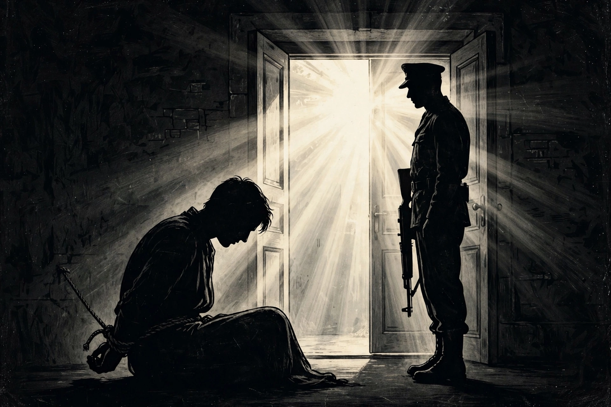

| Legal status | War crime under the Geneva Conventions; prohibited by the 1979 Hostages Convention |
|---|---|
| Motives | Ransom, prisoner exchange, political concessions, safe passage |
| Related concepts | Kidnapping, hijacking, Stockholm syndrome |
A hostage is a person seized by an abductor in order to compel another party — such as a relative, employer, police force or government — to act, or refrain from acting, in a certain way, often under threat of serious physical harm or death to the hostage. Hostage-taking differs from simple kidnapping in that the victim is used as leverage against a third party; in practice the two frequently overlap.
In the ancient world, hostages were routinely exchanged between states as guarantees of treaties: noble children were raised at a foreign court (a practice Rome used extensively, and which also served to Romanise client kingdoms). The word derives from the Latin obses, "hostage, surety". Hostage-giving persisted into medieval diplomacy before fading as international law developed.
Taking hostages in armed conflict is prohibited by Common Article 3 of the Geneva Conventions and is a war crime. The International Convention Against the Taking of Hostages (1979) obliges states to criminalise peacetime hostage-taking and to prosecute or extradite offenders. Domestically, hostage-taking is a serious felony in virtually all jurisdictions.
Notable modern crises include the Munich Olympics massacre (1972), the Entebbe hijacking and rescue (1976), the Iran hostage crisis (1979–81), in which 52 Americans were held in Tehran for 444 days, the Moscow theatre siege (2002) and the Beslan school siege (2004). Responses range from negotiation to rescue by special forces; many governments publicly maintain a policy of not conceding to hostage-takers, particularly on ransom, though practice varies.
Hostages may develop Stockholm syndrome, a survival response of sympathy or identification with captors, named after a 1973 bank robbery in Stockholm. Survivors commonly experience post-traumatic stress. Professional hostage negotiators aim to prolong the incident, build rapport and trade small concessions for releases, since most hostages are killed either at the outset or during rescue attempts.
See also: Special forces · Idi Amin · Kidnapping · Iran hostage crisis